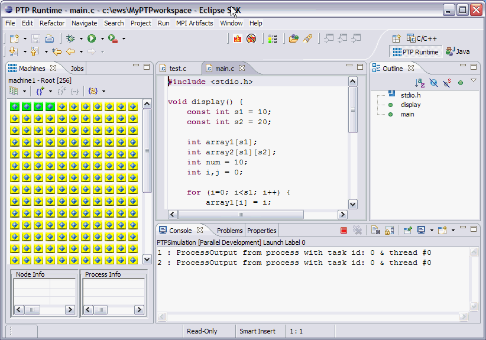

To demonstrate the PTP functions, a simulator is provided.
To set up a simulator project,
Window > Preferences > PTP > Simulation
Click "Create" above and the PTPSimulation project will be created. Click "OK" to close the Preferences dialog.
Now create a launch configuration.
Click Run > Run... (or use the Run icon on the toolbar)

Click the "Parallel" tab and set the number of processes on at least one machine to something > 0

Click the "Run" button...
The PTP Perspective is displayed and the run commences...

Note that the icons in the machines view have changed, now that the processes are running, and that output appears in the Console.
Continue with Monitoring Parallel Program execution with the PTP Runtime Perspective .